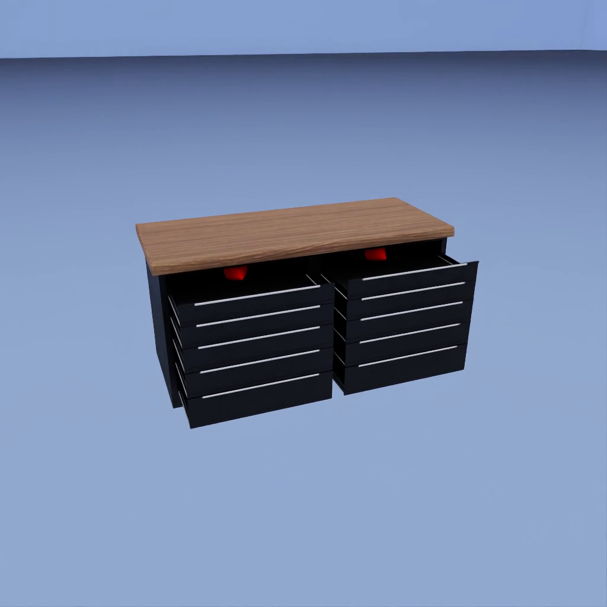

joint_movement (FET004 Multibody)#
Property |
Value |
|---|---|
Test name |
joint_movement |
Feature(s) |
|
Engine |
Kit / Isaac Sim (>=2024.2.0) |
Test version |
2.2.5 |
Wall-clock timeout |
600 seconds |
Summary#
Confirms that the asset’s joints are discovered and that at least one connected-body
pair moves relative to each other when a velocity drive is applied to the joint
using PhysX. Newton owns the separate joint_movement_newton procedure,
including its tensor-position drives and balanced spherical-force probes.
Optional motion evidence#
Each executed probe/record window records the child body’s rotation change
in its parent’s frame, plus translation magnitude and XYZ displacement mapped
through the frozen reference-parent linear transform into reference-world
stage units. The basis includes the parent’s composed reference scale and
orientation; it is neither an unscaled parent-local distance nor current-world
displacement. Each window has its own starting pose. These reuse the transform reads used
by the test; they are not joint-coordinate, contact, or actuator-effort telemetry.
Distances are stage lengths (with stage scale recorded), rotations are degrees.
Legacy result fields translation_m, bbox_diag_m and
jm_joint_<name>_bbox_m retain their names but contain stage-unit lengths, not
automatically SI metres. Interpret them using the recorded stage scale rather
than treating the suffix as a conversion.
These compatible length fields are rounded to four decimal places; a displayed
zero for a tiny positive length is not the unrounded normalization input.
Use jm_joint_<name>_translation_stage_units and
jm_joint_<name>_bbox_diagonal_stage_units for unrounded numeric evidence.
Their unit fields are stage_length, the translation basis is
frozen_reference_world, and bbox_purposes lists default, render and proxy.
The raw numerator and reference diagonal are paired from the actual trial
with the greatest exact normalized translation, identified by
translation_evidence_basis = trial_with_maximum_normalized_translation.
They are not independently combined maxima from different observation windows.
Legacy rotation and rounded displacement maxima retain their compatible
aggregation. The public joint_movement_result per-joint record carries the
same raw fields and provenance; absent observed tracker evidence remains null,
not a fabricated zero measurement.
Unique authored joint names keep their existing public identity. Duplicate
leaf names or names that collide after metric sanitization receive stable
path-derived suffixes, so independent trials cannot overwrite each other.
Per-joint result records preserve authored_name, prim_path, parent and
child body paths; aliases do not modify USD prim names or actuator settings.
Rotation extraction separates scale from the affine basis and qualifies a
finite proper orthonormal rotation. An unqualified decomposition stops
execution rather than fabricating zero rotation.
Nominal observation-step seconds exclude warmup, reset, and rendering ticks.
Probe and record windows are separate histories; only captured windows have
capture associations. Recording is bounded and may be partial for many-joint
assets. Missing optional evidence does not change the verdict.
What Pass Guarantees#
Each connected child and named parent must provide a finite, invertible transform. An unavailable or invalid required transform stops execution with its original cause; it cannot become zero motion or a world-frame substitute. A joint explicitly connected to the world has no parent-body readback and is measured in the world frame. These are distinct topologies, not fallback modes. Translation normalization likewise requires a finite, positive child-body world bounding-box diagonal over default, render and proxy-purpose geometry. Missing, empty, zero or non-finite required bounds leave execution incomplete; no invented diagonal or zero-response substitute is used. A small positive diagonal remains valid and is not rejected by an arbitrary minimum-size cutoff. Do not reauthor a valid geometry purpose merely to satisfy this setup check.
A pass means at least one tested joint produces measurable relative motion between its connected bodies above a configured threshold. The test does not require every joint to move, verify every authored axis or limit, or certify downstream robot readiness. Inspect the individual joint metrics and recordings. When a bounded scalar joint’s connected-body motion exceeds its full authored span plus the configured movement threshold, the trial is inconclusive and reports a runtime error. This conservative proxy check prevents a broken probe from turning implausible motion into PASS; it is not native joint-coordinate telemetry or certification that every authored limit is respected.
What It Checks#
The test first runs its existing movable-joint prechecks. A no-joints/all-fixed
result skips the trial. The no_movable_joints applicability marker is recorded
only when a separate complete, concrete, proxy-aware owned inventory positively
establishes that no movable joint exists. A partial or unresolved inventory, or
a movable instance-proxy joint omitted by the original precheck, leaves that
same skip unmarked and reported as Could not assess. It supplies neither an
evaluated asset FAIL nor PASS. Movable joints that cannot be wrapped or mapped for
the required runtime probe leave execution incomplete with NO VERDICT.
When movable joints are found, the test
discovers each joint and the resolved paths of its connected child and parent
bodies.
For independently controlled scalar joints, the test applies a velocity drive on the degree of freedom implied by the joint type. PhysX mimic followers are observed during their reference joint’s drive without receiving an independent temporary drive. On PhysX, spherical joints are excited through a temporary external D6 driver because PhysX does not support drives directly on SphericalJoint. A joint passes when it produces a rotation of at least 1.0 degree or a translation of at least 2.0 percent of the child body’s bounding-box diagonal. The overall test passes when at least one joint meets either threshold. If no joint moves on any drive or nudge, the test fails.
How It Works#
The test runs the drive search without frame capture first, then re-runs only the winning configuration with capture, because rendering dominates the cost of this test.
Scene setup. The asset loads into a colored context room with gravity set to zero and a visual ground plane for context. The asset is seated on the ground so the scene reads naturally, but the floor collider is disabled: with gravity at zero and a kinematic base, nothing rests on the floor, and a live floor collider would silently block a joint driven toward it and misread as motionless.
Joint discovery. Before physics runs, the test scans the asset’s prim hierarchy for movable joints and records each joint’s type, prim path, and the resolved paths of its child and parent bodies. Each joint is classified by the drive degree of freedom that its type implies: a revolute joint drives on its angular degree of freedom and a prismatic joint on its linear one. The runtime applies the drive about the joint’s own authored axis, so the axis letter is needed only for the direction of the displayed arrow. For a spherical joint, PhysX temporarily overlays a generic D6 driver outside the articulation. It copies the authored body relationships and local joint frames, locks translation and all but one permitted swing axis, then probes both swing axes in both directions. The temporary driver is removed after each stopped simulation. A D6 or other joint with no single obvious degree of freedom retains the linear-velocity nudge fallback.
Base anchor. For a loose maximal-coordinate assembly, the test pins base bodies by setting them kinematic. A base body is a rigid body that is a joint parent but never a joint child. Kinematic bodies are illegal inside a reduced- coordinate articulation, so an articulated asset keeps its authored fixed or floating base. Movement is measured in the parent-relative frame using both required body transforms, or in the world frame for an explicit world connection. Original kinematic flags are restored.
Open-direction resolution. A joint’s drive target and its lower and upper limits live in the same coordinate, so the open end is the limit farthest from the closed rest near zero. A door limited to a range of zero to 130 degrees opens toward positive 130, a door limited from negative 130 to zero opens toward negative 130, and a drawer limited from negative 0.42 to 0.01 stage units opens toward negative 0.42. Driving each joint toward its own open end, rather than one shared direction for the whole assembly, keeps french doors from jamming each other shut at the center seam. Each directed joint’s target speed is scaled to its own travel so that a short-range door and a long-throw drawer both open within the clip, never slower than the configured baseline. A joint whose limits are missing, infinite, or symmetric has no unambiguous open end and falls back to the positive-then-negative search.
Drive search (no capture). The directed independent joints are driven toward their open limits simultaneously, each at the travel-scaled speed resolved above. Joints with no usable limits are probed at the baseline speed (45.0 degrees per second for angular degrees of freedom, 0.05 stage units per second for linear ones), first in the positive direction, then the still-idle ones in the negative direction. The drive effort, expressed as damping, is ramped from a low floor to a high cap across the run so that stiff or heavy joints break free while light parts are not flung at the start. A high force cap lets the velocity drive deliver the torque it computes, because these joints author no drive and would otherwise inherit the runtime’s default force cap, which can slide a light part but not to open a heavy door against a stiff hinge. A JointTracker samples each joint’s child-body pose in the parent’s local frame every frame and records the maximum rotation and translation seen. Mimic followers are observed in the same windows.
Unbounded-joint fixture limits. Before excitation, a movable scalar joint without finite authored limits receives temporary bounds in the disposable test stage: revolute joints use plus/minus 30 degrees, and prismatic joints use plus/minus the larger of 0.001 stage units and 25 percent of the child-body bounding-box diagonal. These bounds constrain the probe; they do not certify the source joint’s intended limits or full travel. Source files are not changed.
Record pass (capture). Every independently driven joint that moved is re-driven toward its open direction with frame capture at 15 frames per second and motion arrows, to produce the review video. This pass starts the damping ramp high, because the joints have already proven they move, so the part swings or slides clearly from the first frame of the video. If any bounded scalar body’s relative-motion proxy exceeds its full authored span plus the configured movement threshold, this pass is suppressed and the trial reports ERROR with per-joint evidence marked inconclusive.
Spherical-joint fallback. PhysX projects direct child velocity writes inside an articulation and does not integrate DriveAPI authored directly on a SphericalJoint. The test therefore follows PhysX’s external-D6-driver pattern. It drives the two rotational axes perpendicular to the spherical joint’s authored axis at 45 degrees per second, measures relative quaternion rotation, captures the successful attempt, and removes the temporary test-owned joint.
Velocity-nudge fallback. If the joint-level drives moved nothing on PhysX, D6 and other unconstrained joint types sweep child-body linear velocity in the six cardinal directions at 0.1 stage units per second. The same search-then-record structure applies.
Final fallback. If neither the drive search nor the nudge sweep produces movement, the test poses one still frame per attempted degree of freedom and direction, with its arrow, and stitches them into a low-frame-rate overview video at 0.5 frames per second. No physics is simulated for this fallback. The video lets a reviewer inspect every configuration that was attempted.
Movement measurement. The JointTracker measures rotation as the angle between
the initial and current relative quaternions of the child body in the parent
body’s local frame. The difference between relative translations is mapped
through the frozen reference-parent linear transform, preserving composed
reference scale and expressing displacement in world stage units along frozen
reference-world axes. Its Euclidean magnitude is compared with the child
body’s world bounding-box diagonal; the 2-percent threshold is unchanged.
The relative matrix is
child_world * inverse(parent_world) under USD’s row-vector convention. This
comparison excludes a common rigid rotation or translation of the assembly;
an unavailable named parent leaves execution incomplete rather than changing
the measurement frame.
Failure Cases#
Symptom |
Checks before attributing a cause |
|---|---|
Test fails: 0 joints responded; drive degrees of freedom tried in both directions |
No observed relative motion crossed the configured thresholds. Inspect discovered bodies, temporary drives, backend state, constraints and self-collision before attributing a cause. |
Test fails: only angular degrees of freedom tried, no linear |
Inspect the discovered joint types and attempted excitation metrics; the absence of a linear attempt does not establish that an angular joint is locked. |
Test fails: external spherical driver or linear velocity nudge attempted but still no movement |
Check the attempted driver, body mapping, live motion, authored limits and effective constraints. This result alone does not identify a limit or collider defect. |
Test is skipped: no movable joints found |
The original precheck found no candidate. Not applicable requires separate complete proxy-aware absence proof; otherwise the unmarked skip is Could not assess. Inspect the composed variant and inventory gap. |
Test is skipped: all joints are FixedJoint |
The precheck found only fixed joints. A complete qualified inventory can establish Not applicable; an incomplete inventory retains an unmarked Could not assess result, not asset FAIL or PASS. |
How to Fix#
When no joint responds, first inspect the per-joint results, attempted drive directions, temporary fixture setup and engine log. Propagated backend or observation errors are incomplete execution, not proof of a defective asset. Inspect the required-transform error and resolved body paths when the tracker cannot establish a measurement; do not interpret it as a no-response FAIL. After setup is qualified, compare the following authored properties with the mechanism’s intended contract rather than changing them merely to obtain a pass.
Verify that lower and upper limits allow a range of motion. A joint whose lower limit equals its upper limit is locked and cannot move.
The test overlays velocity-mode drives with zero stiffness and a configured damping ramp in the disposable stage. An authored drive’s stiffness or damping is therefore not, by itself, an explanation for a failed probe or permission to retune the source drive. Inspect the effective temporary drive and achieved body motion first.
Check that the joint axis and local frames match the intended mechanism. The movement threshold does not independently validate those axes or frames; a successful probe cannot substitute for their static checks.
Confirm the connected body relationships, applicable body schemas, selected runtime variant and native body mapping. Do not infer a specific static or kinematic classification solely from a missing response.
Verify the joint type matches the intended degrees of freedom. A PhysicsRevoluteJoint should be used for single-axis rotation, a PhysicsPrismaticJoint for translation, and PhysicsSphericalJoint for multi-axis conical swing. A spherical joint is exercised through a temporary external D6 driver on PhysX.
Expected Result#

The joints that move are driven toward their open direction. The two bodies connected by each moving joint visibly move relative to each other in the joint’s allowed direction: rotating for a revolute or spherical joint, or sliding for a prismatic joint. Scalar joints can move together during the batched probe and record pass. A motion arrow anchored on each moving part points the direction that part is actually traveling. A joint that produces no visible relative motion is recorded as a nonresponse; another passing joint can still make the overall test pass. The video is illustrative; the numeric thresholds determine the result.
Notes and Caveats#
Gravity is disabled. Physics runs with gravity set to zero throughout the test. This removes gravitational settling from the probe, but does not independently rule out constraint, contact, initial-state or setup transients as causes of observed displacement.
Base handling depends on topology. Loose assemblies have their base bodies made kinematic before simulation. Articulated assets retain their authored base configuration because a kinematic body inside an articulation is unsupported. A floating articulation may visibly counter-rotate as its joint moves. With usable parent and child observations, the relative-frame criterion excludes that global rigid motion; a missing named-parent read stops execution.
The floor collider is disabled. The ground plane stays visible for context, but its collision is turned off. With gravity at zero and a kinematic base, nothing rests on the floor, so a live floor collider would only block a joint driven toward it and read as a false failure.
Relative-frame measurement. JointTracker measures the child’s pose in its named parent’s frame, or in the world frame for an explicit world connection. Missing, non-finite or non-invertible required transforms are execution errors, not measured motion or evidence that the source joint is defective.
One passing joint is sufficient. The test passes when at least one joint
crosses the threshold on any drive or nudge direction. Joints that do not move are
recorded in per-joint metrics but do not cause the overall test to fail.
The jm_joint_<name>_excitation metric distinguishes an independent drive from
mimic_following. jm_joint_<name>_limit_consistency reports
not_assessed, proxy_within_authored_span, or
proxy_exceeds_authored_span. An out-of-span proxy makes the entire trial
inconclusive, with jm_joints_inconclusive counting the affected assessment
records; it does not assert that a native joint-coordinate limit was measured.
The legacy travel percentage is a body-motion proxy, not a range check.
jm_joint_<name>_pct_of_travel divides the rounded relative-body rotation or
translation measurement by the chosen authored endpoint magnitude and caps the
result at 100%. It is not measured native joint-coordinate travel, the full
lower-to-upper interval, or completion from a nonzero initial coordinate. The
companion jm_joint_<name>_pct_of_travel_basis records
capped_relative_body_motion_over_authored_endpoint_magnitude. Legacy numeric
values remain unchanged. This ratio is informational only; PASS still requires
relative motion above the configured threshold, not a claimed full-range reach.
Movement thresholds must be finite nonnegative real numbers, excluding booleans;
invalid configuration is rejected before scene mutation, not treated as an
asset no-motion result. The existing greater-than-or-equal comparison is
unchanged: an explicitly configured zero threshold can accept zero motion and
must not be presented as proof of movement. Defaults remain positive.
Fixed joints are excluded. Joints of type PhysicsFixedJoint are excluded from discovery and do not appear in the metrics. An asset where all joints are fixed is skipped rather than failed.
Motion arrows are optional composed-USD visualization. Their centers and directions use default-time composed-USD bounding boxes relative to pre-play centers, not a native/Fabric observation. A fresh cache does not prove that USD reflects current simulated motion; stale/unavailable centers can omit or misrepresent arrows. The verdict and recorded motion histories independently use the required body-transform tracker (PhysX-updated USD in Core; Fabric poses in Newton), not these arrow proxies. Still-frame fallback arrows show attempted degrees of freedom/nudge directions, not demonstrated motion.
Interactive instrumentation. The test emits a structured
joint_movement_result event on the engine event channel with a full per-joint
summary, totals, the winning drive direction, the attempted degrees of freedom,
and the recorded video name, so an interactive Isaac Sim run reports everything in
one place.